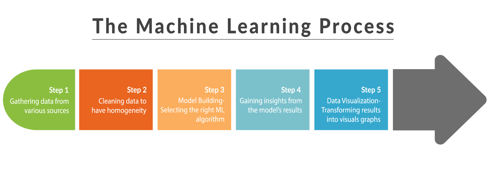
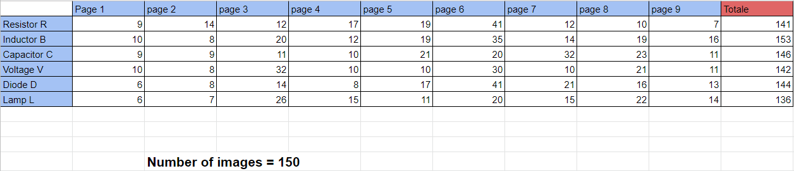
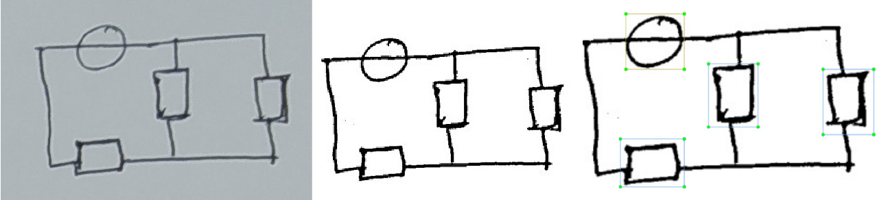
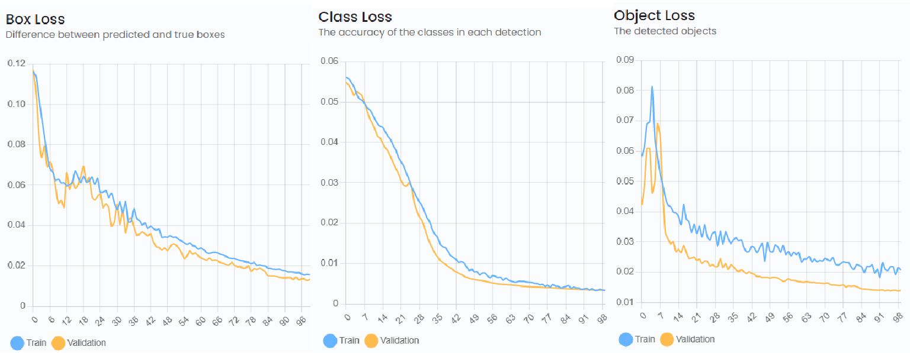
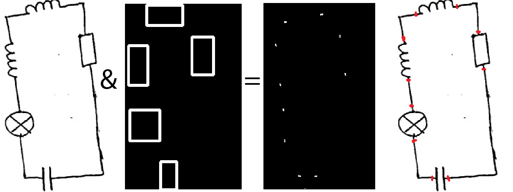
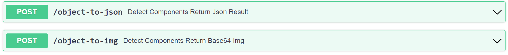
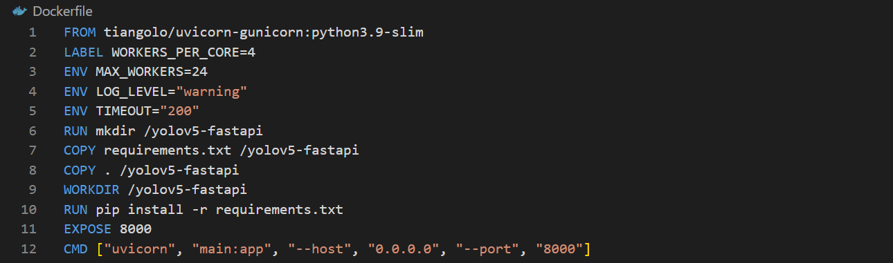

The interesting thing about this project is that it originated from a real problem I faced while studying electrical circuits at university, I looked for an app that can detect a handwritten schema for simulation without needing to spend time redesigning the circuit using a drag-and-drop tool.
Also, I wanted to go through all the machine learning steps so I began by hand drawing a bunch of circuits for my dataset.

I drew 150 images containing 6 component types (capacitor, inductor, voltage source, resistor, diode, lamp).
I uploaded them on Kaggle link.
Data labeling was done using LabelImg in YOLO format.

Wrote a simple script using OpenCV to apply adaptive thresholding on all images (used simple thresholding at first but results weren't satisfactory) and resize them all to 320x320 pixels while filling empty space with white pixels.

Just 150 images won't allow the model to generalize but guess what? data augmentation saves the day. I used albuemnations library (because it also adapts the bounding boxes) to 10x the dataset by applying horizontal/ vertical flips and random rotations.
At first, I used TensorFlow's object detection API, I got it working but ended up using ultralytics implementation of yolov5 for better performance and faster training (easy to set up on a colab notebook to train 100epochs on GPU)
Results:
We achieved around 90% confidence in object detection

Each component has two terminal points, this didn't require machine learning just plain old image processing.
Remove components from circuits (using their bounding boxes) and apply bitwise and like the following !circuit image & boxes image

I plan to use KMeans to get the exact centroids for each terminal point, K=len(components)*2
For this, I created two simple endpoints for inference using fastapi library

Built the project into a container image for use as maybe a microservice

I haven't worked on this part of the project yet.
ps: this project is still a work in progress.